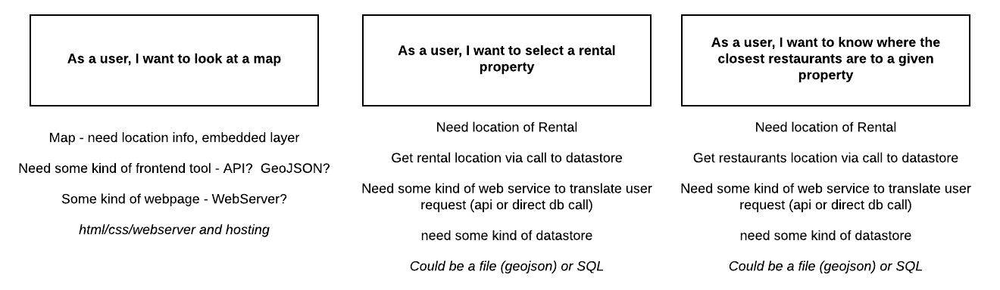
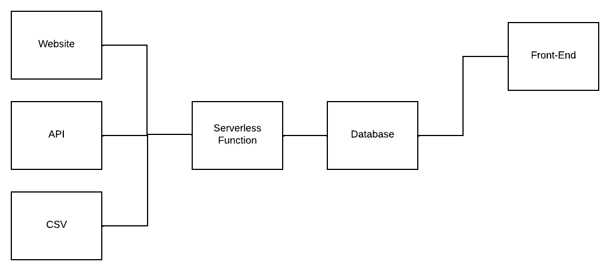
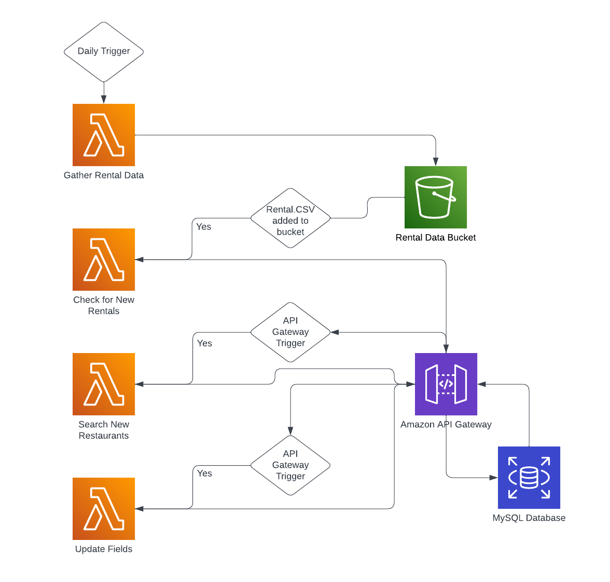
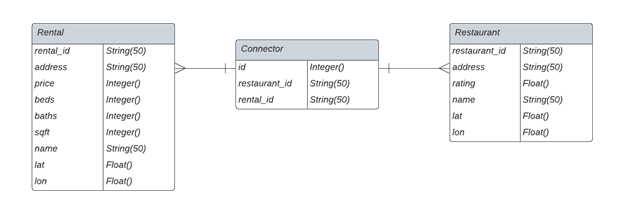
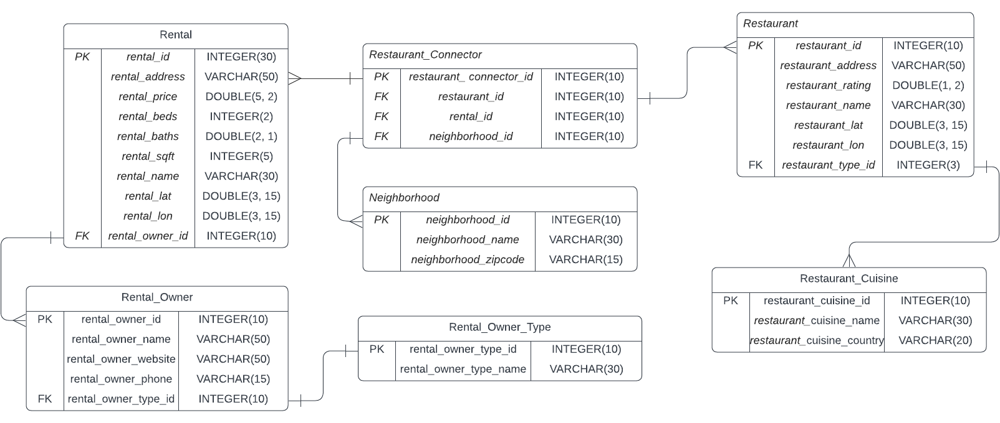
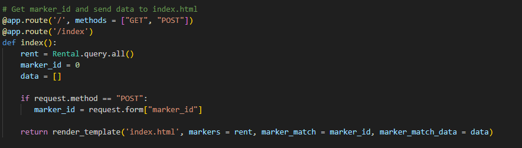
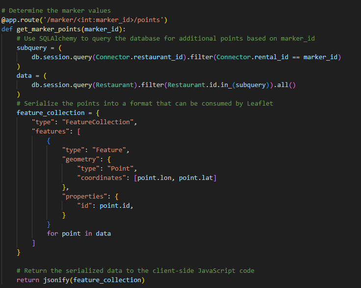

NeighborhoodInspector Web Application Development
Project Description
My partner and I are currently searching for a new apartment in Seattle. Throughout this process, we have been utilizing various rental search services to find a property close to what we enjoy doing - such as exploring new restaurants. However, we have noticed that these services often need to pay more attention to the surrounding area's amenities and prioritize the property's features. In response, I decided to use my skills from my Master's program to create a new web application that focuses on finding apartments based on local attractions. To accomplish this, I used user stories to break down the necessary technological requirements. I implemented various APIs - such as Zillow and GooglePlace - to populate a database using AWS Lambda and AWS RDS. Finally, I utilized Flask Web Server to create an interactive map that displays rental properties near desirable amenities. The result is a visually stunning and user-friendly web application that simplified our apartment search
To help understand the potential technological components of this application, I created a diagram to understand the ingredients and skills I would need to develop on this path. The map below shows the potential structure by which this application would be built.
While ideating for my project, creating the backend was the most exciting and impactful for my career goals. I spent most of my time figuring out how to ingest the data into a database, what technologies to use for database interaction, and how to orchestrate the data. I knew using APIs would be the most accessible and accurate resource for this application, so I researched rental and restaurant APIs. After analyzing the options, I decided to use Zillow and GooglePlace APIs. I relied on AWS Lambda as the ETL tool to manage the data orchestration. I opted for AWS RDS to host a MySQL instance for data storage. Finally, I used a Flask Web Server to showcase the data on a map. The result was a visually stunning and intuitive display that truly highlights the data.
ELT Pipelines for Database Updates
I discovered the benefits of utilizing a serverless function for this application during my research. AWS Lambda was the ideal choice due to its quick deployment, cost-effectiveness, and ability to use computational resources only when required. This approach allowed me to conduct tests on the Python scripts while implementing the tool and troubleshoot any issues that occurred. The individual functions are highly scalable, which will be crucial as the application becomes more intricate.
Breaking down the ETL architecture from above, I first want to focus on the first few functions. I have a lambda function that pulls all the Rental data from the Zillow API. I must do this because the API is broken down into pages, and I cannot filter the rental properties based on their Primary Key values. Therefore, I ingest all the rental properties from the API into an S3 Bucket in AWS. That process then triggers a process that uses the S3 Bucket file to update the MySQL database using an API Gateway. I have included a field set to true when the latest rental property is added to the database to denote when a new rental property has been added. Then a process of searching for new restaurants around the new rental properties. Finally, I have a function that updates the rental property field and does some tests on the database to ensure data integrity across the application.
Using an API Gateway to query the database was a decision made over direct connections to the database to have a secondary layer of test operations to ensure data is in the relevant format and limit the number of direct links the Lambda function made with the MySQL database.
Initial Database Schema
Now that we've gone through how the data for this application is updated and added to the database, I want to discuss relational database management systems (RDBMS). I decided to use a MySQL database hosted by AWS RDS because it's easy to use, performs well, and is widely adopted by the development community. I'm also familiar with MySQL RDBMS, which made it the natural choice for this project.
After selecting the RDBMS, I focused on normalization to ensure data consistency, efficiency, flexibility, and scalability. The goal of the application was to streamline the data collection process, implement new technologies, and make application development easier. The diagram below shows a typical many-to-many relationship between rentals and restaurants with a connector table. This approach limits the data stored in the database since there are multiple restaurants for each rental property, and a restaurant can be close to numerous rental properties.
Once the application is up and running on a hosted EC2 instance, I'll upgrade the normalization factor ofthe SQL data structure. The diagram below is an example of normalization within the database structure.
To achieve 3NF, I eliminated dependencies on primary keys and built out more lookup tables. I made several design changes, including creating a Rental_Owner_Type entity to specialize the overall entity relationship and specializing Rental_Owner_Type into its entity to create coherency and normalize this section of the ERD. I also made a Restaurant_Cuisine entity to specialize the entity relationship, allowing for categorical data that can be used in a recommender system to improve future feature enhancements to the web application.
Balancing generalization and specialization was necessary, and I focused on balancing these aspects in the Rental and Restaurant entities. Keeping these entities general ensured that the most impactful information was presented to users on the web map. Finally, I limited the relationships and the need for querying, providing user experience wasn't determined by query times when interacting with the web map.
Initial Functionality of Web Application
I decided to use Flask, a web development framework in Python, which allowed me to connect directly with the MySQL database. This highly adaptable and scalable framework makes it perfect for more complex functionality and resources. While initially starting development in a Django Web Server configuration, I realized it was optional for the final product, which only required user authentication and administration interfaces. Flask provided the freedom to choose the libraries I wanted to use, intuitive functionality, and I could set up the test environment quickly on my machine for development.
In the video demonstration of the web application, you can see how the Flask Web Server functioned and my decisions when creating the routes. The website loads data from the MySQL database and sends it to the Leaflet.js script, which initializes the markers on the map. When users select a rental property, a fetch request is sent to the backend, which queries the Restaurants table and sends the data to the front end as a GeoJSON file. This approach speeds up the querying process and allows for various markers on the map.
When you select a rental, the system sends a request to fetch the Rental_ID from the backend, which is then queried against the Restaurants table. Once the data has been retrieved from the database, it is converted into a GeoJSON file format and sent to the front end. We chose to use a GeoJSON file because it allows us to create multiple markers on the Leaflet map with just one call. This helps to speed up the querying process and ensures that every restaurant subset can be easily swapped out for other rental property selections on the map. Please see the example code below for more information.
I found that understanding how the Flask framework interacted with the database was crucial in the development process. It was the area where I found the most interest, as interacting with the database directly was essential to increasing query performance. This meant that I didn't need to transform all the information to APIs to be ingested by a static webpage.
Next Steps
In four short months, I was able to learn all of these development tools and create a working prototype on my local instance. I enabled updating of a database using Lambda functions to orchestrate updating my MySQL database hosted on an RDS instance. Now, I must deploy my instance on a compute instance such as EC2 or ElasticBeanstalk. I have yet to get the time to dive deep into this web application deployment process as other projects and constraints have gotten in the way. However, I have understood the needs of both EC2 and ElasticBeanstalk, which will give me a schedule for further development when I have more time.
EC2 gives users complete control over an operating system, software stack, and configuration of instances. This means that I have to handle the entirety of the installation, configuration, and management of the infrastructure. While ElasticBeanstalk automates this process by providing a PaaS. Elastic Beanstalk handles infrastructure provisioning, load balancing, auto-scaling, and application health monitoring, allowing me to focus on writing code rather than managing infrastructure. However, the computational cost of EC2 is much lower than ElasticBeanstalk, which is a positive difference between the computation resource. To learn the entire process, I need to use an EC2 instance to learn the ropes and then transition to ElasticBeanstalk for future development projects.
Another improvement to this application would be to add different resources in terms of attributes that make up a neighborhood, such as bike shops, libraries, gas stations, or grocery stores. Adding features to neighborhoods would increase functionality within the application, but the steps taken to allow scalability and performance will be magnified when this occurs. All of these aspects have been considered in the initial development stages.